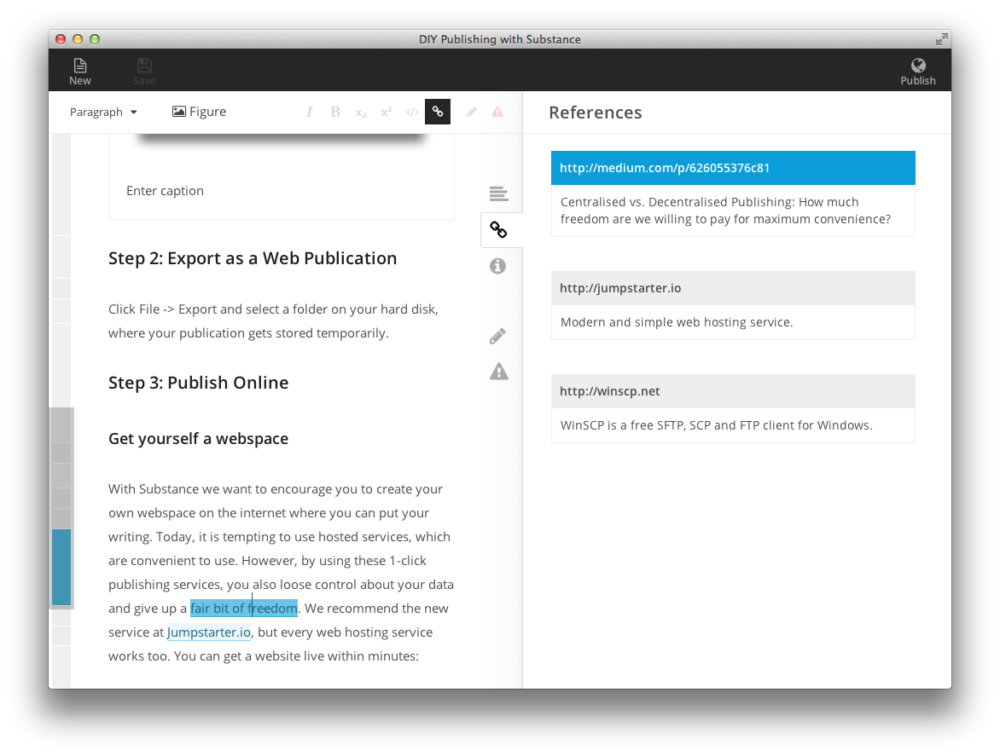
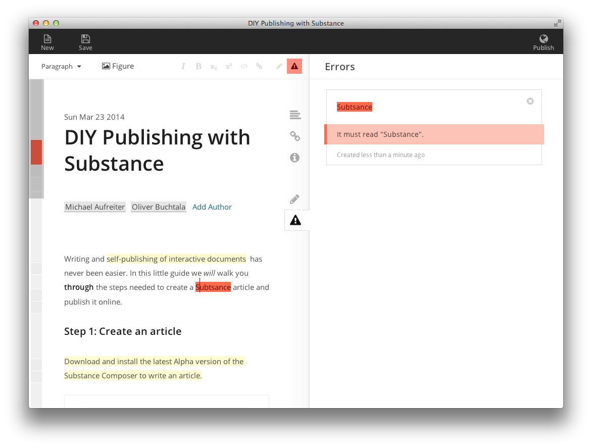
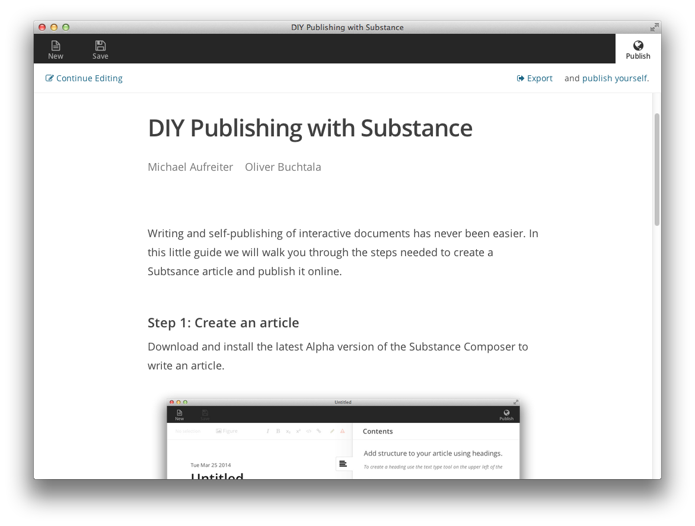

Distraction-free structured writing

The Substance Composer lets you focus on the content, leaving the layout part to the authoring system.
Rich citations instead of just Hyperlinks
The Substance Composer supports academic guidelines for referencing external sources. You can describe resources (such as webpages) and reference them multiple times in your document.
Add remarks and corrections
Create notes while you are writing, and have your document reviewed by someone else using simple markers.
Easy Self-Publishing
Once done with writing your article, you can preview the resulting web publication and export it to a folder on your harddisk.